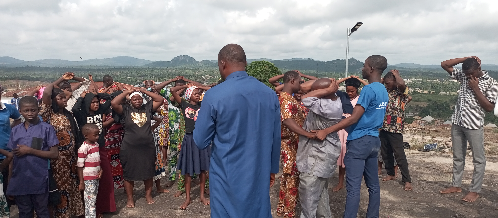

Introduction
Welcome to our latest blog post. Here, we'll share some inspiring stories and updates from our church community.
Main Content
The God of Wotrem is truly amazing. He has helped to provide shelter, food, and so much more. From the day I came to know Him, He gave me a happy home with two wonderful kids. There are countless things He has done for me. He's a loving and caring God. I met the founder of this church some years back, and ever since I met him, he has helped me immensely—both financially and spiritually. Many blessings have come into my life through him. Glory be to Jesus!
When I reflect on my journey, it's incredible to see how the God of Wotrem has guided and supported me. Life before finding this divine connection was filled with uncertainty and struggle. I often worried about how I would provide for my family and find a place we could call home. Then, I discovered the church and the profound teachings of its founder. This meeting was a turning point. The church founder’s kindness and wisdom brought a new light into my life. He didn't just preach about the wonders of faith; he lived it, extending a helping hand to those in need. Through his guidance and the grace of God, I found stability and joy. The support I've received has been more than material. Financial aid was just one aspect of the transformation. Spiritually, I was uplifted in ways I never thought possible. Prayers that once felt empty now filled me with hope and strength. I learned to trust in God’s plan, and slowly, my worries began to fade. I can vividly recall nights spent praying for a better future. Each time, I felt a comforting presence, assuring me that things would improve. The God of Wotrem answered those prayers in abundance. My children and I now live in a warm, loving home. We never go to bed hungry, and there is a sense of peace that permeates our lives. In sharing my story, I hope to inspire others to seek out faith and trust in divine providence. The God of Wotrem is not just a figure of worship but a source of endless love and support. His blessings have touched every part of my life, bringing joy where there was once despair. To anyone reading this, know that there is always hope. Faith can move mountains and bring miracles into your life. Glory be to Jesus for all the wonders He has done!
Conclusion
Thank you for reading our blog post. We hope you found it inspiring and informative. Stay tuned for more updates!